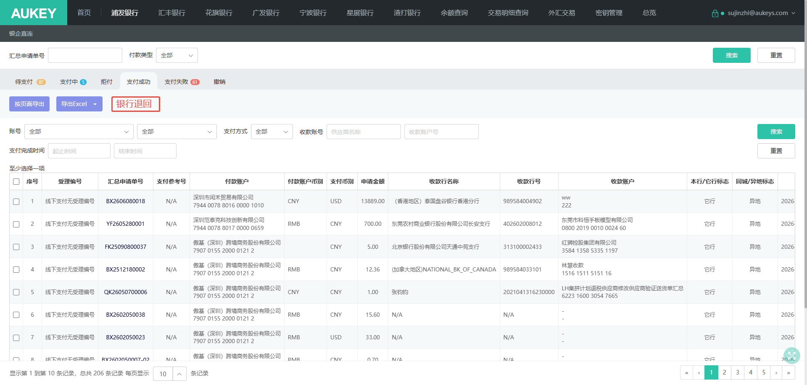
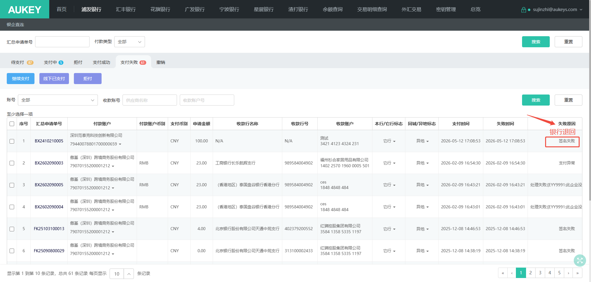
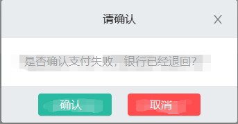

需求背景：
公司采购了一个新的费控系统，费控系统将付款数据推送至佰易的银企直连，由银企直连端发起支付，再将支付状态推送至新费用系统。
目前出现的问题是，单据推送至银行进行支付，推送成功并且付款成功，但次日的时候收款银行返回失败，这时候支付流程已经结束，单据状态已经是支付成功状态，无法再进行变更且费控那边的单据依旧是支付成功的状态，导致费控无法再发起单据，且这边支付单据的支付状态并非为真实的支付结果。


1
2
需求说明：
1.在各个银行列表页下的【支付成功】页面增加按钮【银行退回】如右图一所示，用户勾选多条单据并点击按钮【银行退回】，弹窗提示“是否确定支付失败，银行已经退回？”，用户点击取消，关闭弹窗，且不做任何处理；用户点击确认，则将单据的支付状态变更为“支付失败”，失败原因标识为“银行退回”并将单据放置于【支付失败】列表页面，如图二所示。
2.标识这类单据，用户不可对这类单据进行“继续支付”操作。前端进行控制，用户选择这类单据时，“继续支付”按钮置灰。
3.单据变更支付状态后，将单据的支付状态重推给新费控系统。
